using Cooperative Allosteric Binding
Department of Physics & Astronomy · Department of Biophysics · Johns Hopkins University
Eukaryotic cells generally sense chemical gradients using the binding of chemical ligands to membrane receptors. In order to perform chemotaxis effectively in different environments, cells need to adapt to different concentrations. We present a model of gradient sensing where the affinity of receptor–ligand binding is increased when a protein binds to the receptor's cytosolic side.
This interior protein (allosteric factor) alters the sensitivity of the cell, allowing the cell to adapt to different ligand concentrations. We propose a reaction scheme where the cell alters the allosteric factor's availability to adapt the average fraction of bound receptors to 1/2. We calculate bounds on the chemotactic accuracy of the cell, and find that the cell can reach near-optimal chemotaxis over a broad range of concentrations.
We find that the accuracy of chemotaxis depends strongly on the diffusion of the allosteric compound relative to other reaction rates. From this, we also find a trade-off between adaptation time and gradient sensing accuracy.
Chemotaxis — the directed migration of cells along chemical gradients — is essential for life. Cells can detect gradients as shallow as 1–2% across a single cell width, yet remain functional across orders-of-magnitude variation in ligand concentration.
Immune cells navigate to injury sites along concentration gradients of chemoattractants released by damaged tissue.
Neutrophils track bacteria by following trails of formyl peptides — requiring accurate sensing across wildly varying background concentrations.
Tumor cells exploit gradient sensing machinery to invade surrounding tissue, migrate through vasculature, and seed distant metastases.
The core challenge: receptor–ligand binding stochasticity limits gradient sensing accuracy to a narrow concentration window near the dissociation constant $K_D$. The Fisher information $I_{\phi\phi}$ — the fundamental lower bound on estimation variance — peaks at $C_0 = K_D$ and falls off rapidly. Is there a mechanism enabling cells to maintain near-optimal accuracy over a broad range of concentrations?
We model receptor–ligand interaction as a ternary complex: each receptor can bind one ligand molecule on the extracellular side and one allosteric protein $G$ on the cytosolic side (Fig. 1). The cooperative binding modifies the effective dissociation constant.
Bare receptor — binds ligand with dissociation constant $K_D$
Receptor + G — allosteric protein bound, ligand affinity increased to $K_D/\alpha$ ($\alpha \approx 10$, cooperative)
Receptor + ligand — ligand bound first; G-protein binds with $K_G/\alpha$ (enhanced by ligand)
Fully bound — both ligand and G-protein bound; strongest interaction
As $G$ varies from $0$ to $\infty$, $K_\text{eff}$ sweeps continuously from $K_D$ down to $K_D/\alpha$. By controlling the local concentration of active $G$, the cell can tune its sensitivity to match any background concentration $C_0 \in [K_D/\alpha,\; K_D]$.
Maximized when $K_\text{eff} = C_0$, i.e. when the bound fraction equals $1/2$. The allosteric model achieves this condition adaptively.
The allosteric protein switches between an active form $G$ (can bind receptor) and an inactive form $G^*$. The feedback is simple:
In steady state with $G, G^* \gg K_M$: the feedback drives $f_b = f_u = 1/2$ — perfect adaptation to whatever concentration the cell encounters.
The dimensionless diffusion coefficient $\tilde{D} = DK_G / (V_\text{max} R^2)$ determines whether adaptation is global (large $\tilde{D}$) or local (small $\tilde{D}$).
$G$ equilibrates across the entire cell. $K_\text{eff}$ adapts to the mean concentration $C_0$. The bound fraction gradient reflects the actual ligand gradient. Near-optimal sensing achieved.
$G$ adapts locally at each receptor. Every receptor independently drives $f_b \to 1/2$. The bound fraction is uniform across the cell — no gradient information survives. Sensing fails.
The adaptation model outperforms single- and two-receptor-type alternatives when $\tilde{D} \approx 10$–$100$. This requires fast diffusion or slow reaction rates ($V_\text{max}/K_G$).
Fisher information comparison across receptor models. The allosteric adaptation model (green) maintains near-maximum $I_{\phi\phi}$ over the full range $C_0 \in [K_D/\alpha, K_D]$ (shaded). Single receptor type (red dashed) peaks sharply at $K_D$. Two receptor types (blue dash-dot) broaden the range but sacrifice peak accuracy. $K_D = 100\,\text{nM}$, $\alpha = 10$.
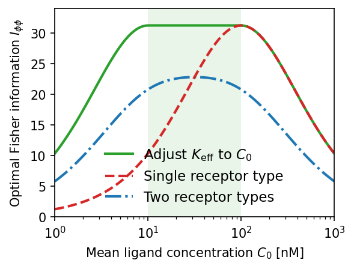
Adaptation dynamics. (a) Steady-state bound fraction $f_b$ vs. ligand concentration. Smaller Michaelis constant $K_M$ yields better adaptation over a wider concentration range (green region). (b) Corresponding active allosteric protein concentration $G$; green line is the theoretical optimum. (c) Time-series response after a sudden drop $80 \to 10\,\text{nM}$: $G$ adapts over ~$100\,t$ units, restoring $f_b \approx 1/2$. $K_D = 100\,\text{nM}$, $\alpha = 100$, $K_M = 10^{-3}\,\text{nM}$.
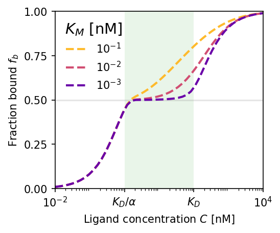
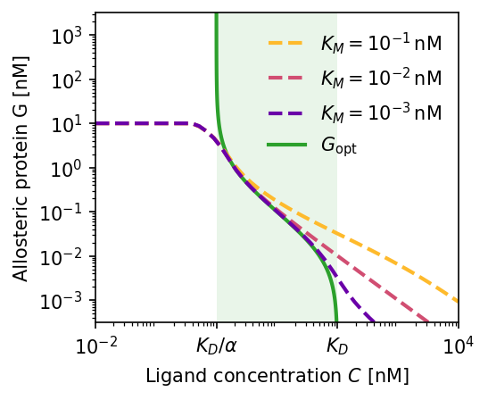
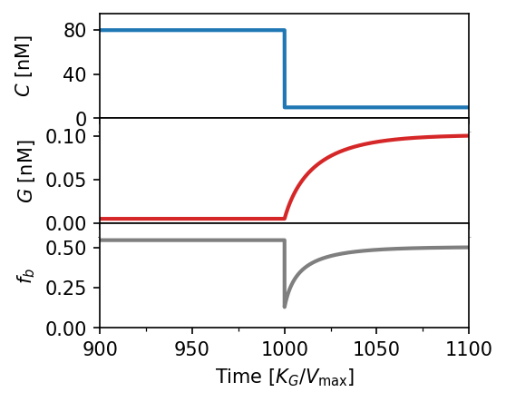
Effect of allosteric protein diffusivity. Blue circles are numerical simulations; red dashed lines are first-order perturbation theory; solid green is the ideal (optimal) limit. (a) High diffusion $\tilde{D} = 50$: simulations match theory and approach optimal $I_{\phi\phi}$. (b) Low diffusion $\tilde{D} = 0.1$: Fisher information collapses by orders of magnitude — local adaptation destroys the gradient signal.
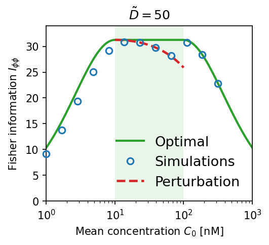
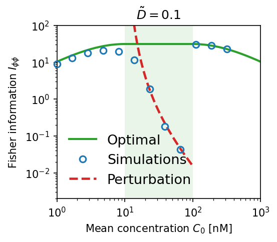
Model comparison heatmaps. $\Delta I_{\phi\phi} = I_{\phi\phi}^\text{adapt} - I_{\phi\phi}^\text{baseline}$ as a function of diffusivity $\tilde{D}$ and mean concentration $C_0$. Red = adaptation wins. The adaptation model requires $\tilde{D} \gtrsim 10$–$100$ to outperform single-receptor type (left) or two-receptor-type (right) strategies. Dashed lines: $C_0 = K_D/\alpha$ and $K_D$.
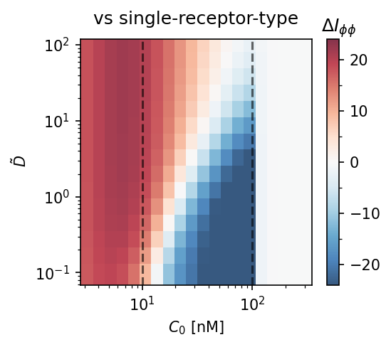
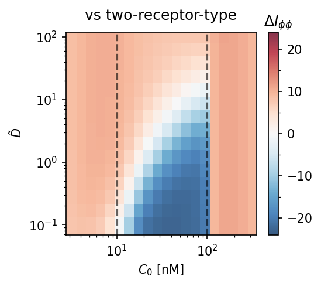
Cooperativity $\alpha$ vs. mean concentration. Fisher information heatmaps at $\tilde{D} = 10$ (left) and $\tilde{D} = 100$ (right). Larger $\alpha$ extends the accurate sensing range only at high $\tilde{D}$; at moderate diffusion, increasing $\alpha$ mainly shifts the region of accuracy.
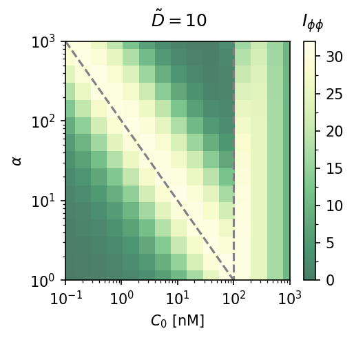
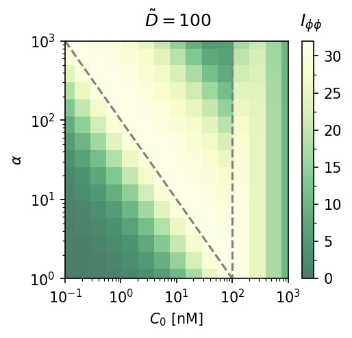
Dependence on Michaelis constant $K_M$. Smaller $K_M$ sharpens the jump in Fisher information at $C_0 = K_D$ (near-perfect adaptation for $C_0 \in [K_D/\alpha, K_D]$). Larger $K_M$ smooths the transition and reduces peak accuracy. $\tilde{D} = 10$, $K_D = 100\,\text{nM}$, $\alpha = 10$.
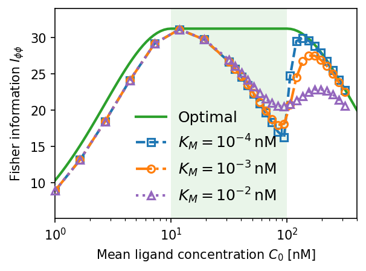
Accuracy–time trade-off. Gradient sensing accuracy $I_{\phi\phi}$ vs. adaptation time $\tau_A$ for three concentration jump scenarios (a–c). Higher Fisher information requires longer adaptation times ($\tau_A \sim 100$–$1000\,\text{s}$). Panel (d) shows the time evolution of $I_{\phi\phi}(t)$ for two representative cases, illustrating the non-monotone dynamics. Blue dash-dot: two-receptor-type baseline; red dashed: single-receptor-type baseline.
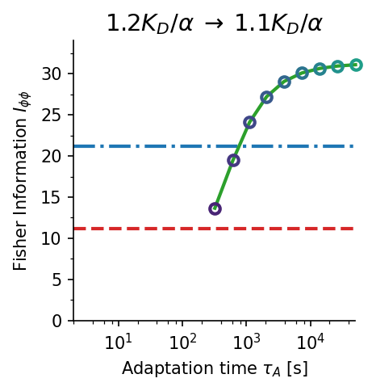
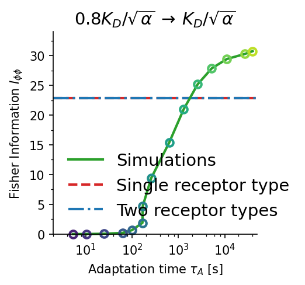
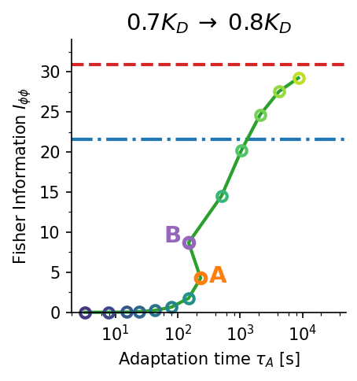
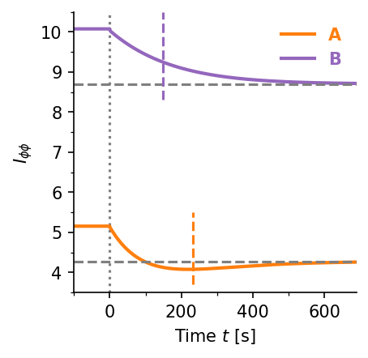
The feedback loop drives the bound receptor fraction to exactly $f_b = 1/2$ in steady state, achieving near-optimal $I_{\phi\phi}$ over the entire range $C_0 \in [K_D/\alpha,\,K_D]$ — without tuning any external parameter.
Near-optimal sensing requires the dimensionless diffusivity $\tilde{D} = DK_G/(V_\text{max}R^2) \gg 1$. The allosteric protein must spread information across the entire cell membrane, not adapt locally.
The adaptation model achieves strictly higher Fisher information than single-receptor and two-receptor-type strategies when $\tilde{D} \approx 10$–$100$, confirming it is the optimal model among those considered.
Higher sensing accuracy demands longer adaptation times ($\tau_A \sim 100$–$1000\,\text{s}$). For cells in rapidly changing environments, this trade-off may render near-perfect adaptation biologically impractical.
@article{srinivasan2026perfect, title = {Perfect adaptation in eukaryotic gradient sensing using cooperative allosteric binding}, author = {Srinivasan, Vishnu and Wang, Wei and Camley, Brian A.}, journal = {Phys. Rev. E}, volume = {113}, issue = {4}, pages = {044414}, numpages = {14}, year = {2026}, month = {Apr}, publisher = {American Physical Society}, doi = {10.1103/z9xd-xbw5} }
Funding: NIH Grant R35GM142847 and NSF DMR 1945141. Reproducible code: github.com/wwang721/allosteric-sensing-reproduce